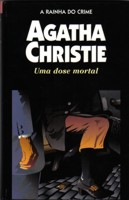

Uma Dose Mortal
One, Two, Buckle my Shoe
Suicídio ou crime? O Dr. Morley era um homem satisfeito, respeitado pelos colegas, amado pela família e pelos amigos. Uma pessoa que não tinha nenhum inimigo nem motivos para se matar. No entanto, ele foi encontrado morto com um tiro na cabeça e um revólver na mão. O inspetor Japp acredita na hipótese de suicídio, mas o detetive Hercule Poirot desconfia das estranhas circunstâncias em que seu dentista morreu. As suspeitas aumentam quando um dos pacientes do Dr. Morley é assassinado e outro desaparece misteriosamente. O detetive belga tem que desvendar o caso antes que seja tarde demais.